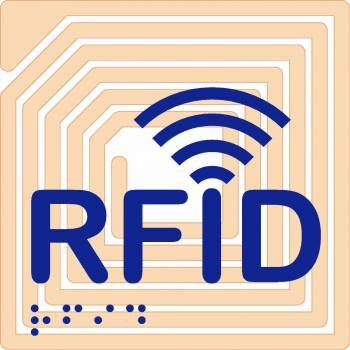
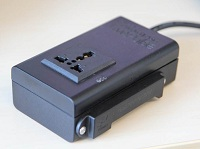

Home > Research
Interests
My research interests include Wireless and Mobile Systems, Sensor Networks, Ubiquitous Computing.
Here is pdf version of my Research Statement.
Research
Microsoft Research Asia, Beijing, China
Research Intern in Mobile and Sensing Systems group Mentor: Dr. Chieh-Jan Mike Liang |
Apr. 2011 - Present |
|
|  | Large-scale RFID-based Asset-tracking System
This is a new project I participate in. I am working on the network protocols that efficiently transfer large amounts of data from RFID readers to back-end servers over low-power ZigBee backbones. |
|
|  | LiveSynergy
LiveSynergy is a novel system that provides reliable proximity sensing and open interactive abstractions for physical spaces and objects, to enable richer interactions between humans and their environment. It consists of three parts: LivePulses (devices that attach to physical objects to give them virtual zones using magnetic induction), LiveLinks (mobile devices carried by humans to discover and interact with LivePulses), interoperability platform (wireless links and a set of IPv6-based open interfaces between LivePulses and LiveLinks that allow intuitive interaction between humans and the physical world). |
|
Carnegie Mellon University, Silicon Valley Campus, Mountain View, California US
Visiting Student in Department of Electrical and Computer Engineering Advisor: Prof. Pei Zhang |
Sept. 2010 - Mar. 2011 |
|
| PANDAA
PANDAA, Physical Arrangement Detection of Networked Devices through Ambient-Sound Awareness, is a low-cost indoor acoustic sensing system. This system features automatic self-localization of networked devices through ambient sound awareness. It needs no pre-deployed infrastructure, is readily applicable for commercial-on-the-shelf mobile devices and processes fully automatic detection. |
||
| SensorFly
SensorFly is a novel low-cost controlled-mobile aerial sensor networking platform. It is light and small helicopter robot integrated with flight control, information acquisition and communication systems. A swarm of them can set up a wireless distributed network dynamically and execute tasks in cooperation. It can be applied to searching survivors in emergencies like fire or earthquake or detecting unknown environments in exploration or combat. |
||